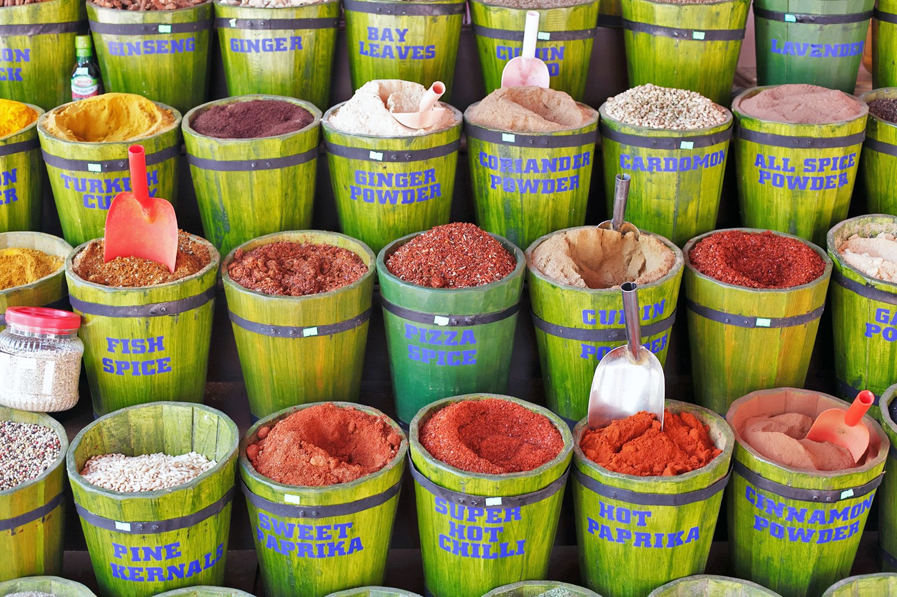

Nuestra idea nace en el año 2021, luego de una visita al Gran Bazar de Estambul (Kapalıçarşı) en Turquía; uno de los mercados más grandes y antiguos del mundo. El área cubierta donde se encuentra
el Gran Bazar de Estambul tiene 45.000 metros cuadrados y en él trabajan unas 20.000 personas. El número de visitantes diarios oscila
entre los 300.000 y los 500.000 dependiendo de la época.
En El GranTépensamos en tu bienestar y queremos acompañarte en donde te encuentres.
"Se bebe té para olvidar el ruido del mundo”
T’ien Yiheng.
La mundialmente famosa marca de té de manzana de Turquía; Hafiz Mustafa.
- La bebida más popular para los visitantes de Estambul y un producto imprescindible del Gran Bazar.
- Si está buscando este famoso sabor turco de té de manzana, ¡esto es lo que está buscando!
- Bebida con sabor a manzana granulada instantánea.
- Producto natural y tradicional.
- Se puede beber tanto frío como caliente.
La bebida más popular para los visitantes de Estambul y un producto imprescindible del Gran Bazar.
- Polvo con sabor a frutas mixtas
- Producto natural y tradicional
- Bebida en polvo aromatizada
- Puedes beber tanto frío como caliente
La mundialmente famosa marca de té de manzana de Turquía; Hafiz Mustafa.
- La bebida más popular para los visitantes de Estambul y un producto imprescindible del Gran Bazar.
- Si está buscando este famoso sabor turco de té de granada, ¡esto es lo que está buscando!
- Bebida con sabor a granada instantánea.
- Producto natural y tradicional.
- Se puede beber tanto frío como caliente.
Nuestro té muy especial producido por la aromatización con esencia de bergamota natural.
- También se puede utilizar mezclando con otros tés.
- Mezcla especial Todo el té negro natural de la región del mar negro.
- Producido Sin adición de aditivos químicos. y cualquier otro aditivo.
- Cultivado sin utilizar pesticidas.
El té negro de producción especial Tirebolu es una bebida caliente ideal para desayunos y después de las comidas.
- También se puede utilizar mezclando con otros tés.
- Mezcla especial Todo el té negro natural de la región del mar negro.
- Producido Sin adición de aditivos químicos. y cualquier otro aditivo.
- Cultivado sin utilizar pesticidas.
Té de miel y canela, Hazer Baba, 300g.
- La bebida más popular para los visitantes de Estambul y un producto imprescindible del Gran Bazar.
- Si está buscando este famoso sabor de té de canela turco, ¡esto es lo que está buscando!
- Bebida instantánea con sabor a canela granulada
- Producto natural y tradicional
- Se puede beber tanto frío como caliente.